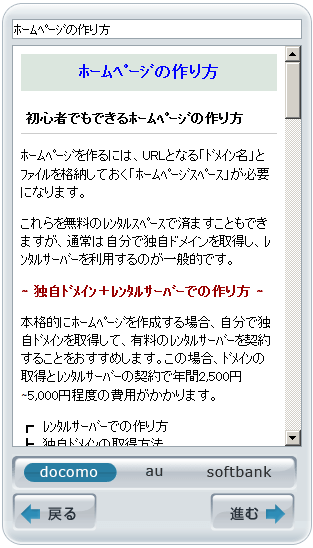

HTMLタグにstyle属性の指定方法 style=
スタイルシートは外部に「.cssファイル」を作成して独立させるのが一般的です。
けれども、その箇所にだけスタイルを適用する場合には、htmlタグにstyle属性を指定して直接スタイルシートを記述することができます。
例えば、見出しタグのh1を赤色にしたい場合、通常は外部にスタイルシートを作成して以下のよう指定します。
・htmlファイル側での記述例
<h1>見出し</h1>
・スタイルシート側での記述例
h1 {color:#ff0000;}
これで見出しタグのh1の箇所が赤くなります。
この外部スタイルシートを使用しない場合、以下のようにhtmlタグにstyle属性を指定して直接そのまま記述することもできます。
・htmlファイル側での記述例
<h1 style="color:#ff0000;">見出し</h1>
どちらで記述しても同じように表示されます。
style属性は携帯サイトで使用されることが多い
このstyle属性は、スタイルシートを使えるPCサイトではあまり使われることがありません。
けれども、携帯サイト（ガラケー）のように、外部スタイルシートを使えない環境ではこのstyle属性が多用されています。
例えば、こちらは当ホームページのフィーチャーフォン用のサイトですが、色やフォントサイズの指定などは全てstyle属性で指定しています。

もちろん、PCサイトでも使えますし、CSSの場合は変更を加えてもブラウザやサーバーのキャッシュが残っていて即時には反映されないことがあるため、そのような際にはHTMLに直接指定すると即時に反映されるため便利です。
■<font>タグは非推奨
上記のようなスタイルシートやstyle属性を使用する方法のほか、フォントの大きさや色彩を指定する<font>というhtmlタグも存在します。このhtmlタグを用いて記述するとすれば、以下のようになります。
<h1><font color="#ff0000">見出し</font></h1>
けれども、この<font>タグはhtml5では既に廃止され非推奨となっています。この<font>タグは使わずに、できるだけスタイルシートを使用するようにしましょう。
<div>要素でのstyle属性の使用例
同じように、段落に指定したい場合には<p style="color:#ff0000;">などと記述し、div要素に使いたい場合には<div style="color:#ff0000;">などと記述します。
文字の色だけではなく、paddingやmarginなども指定できます。
例えば、以下のようなdiv要素があったとします。
・htmlファイル側での記述例
<div class="sample">サンプル</div>
・スタイルシート側での記述例
.smaple {
color:#ff0000;
padding-top:10px;
margin-bottom:10px;
}
これをstyle属性を使い、htmlタグにそのまま記述する場合は以下のようになります。
・htmlファイル側での記述例
<div style="color:#ff0000;padding-top:10px;margin-bottom:10px;">サンプル</div>
ただ、このようにhtmlファイルに直接記述すると煩雑になってしまうため、できるだけスタイルシートを外部化して作成することをおすすめします。
もし使うとすれば、携帯サイトなどでCSSを外部化できない環境やサイト内のたった１か所にのみデザインを適用させたい場合になるかと思います。その度にスタイルシート側で指定していたらCSSファイル自体が長くなってしまい、サイト全体の読み込み速度に影響しそうな場合に限定して使用するとよいでしょう。
ちなみに、div要素はブロック要素のためその前後で改行されてしまいますが、その文字にだけ適用させたい場合には<span style="">を使うと便利です。
<span style="">の詳細についてはこちらのページをご参照ください。
→ span styleで文字色と背景色の指定方法